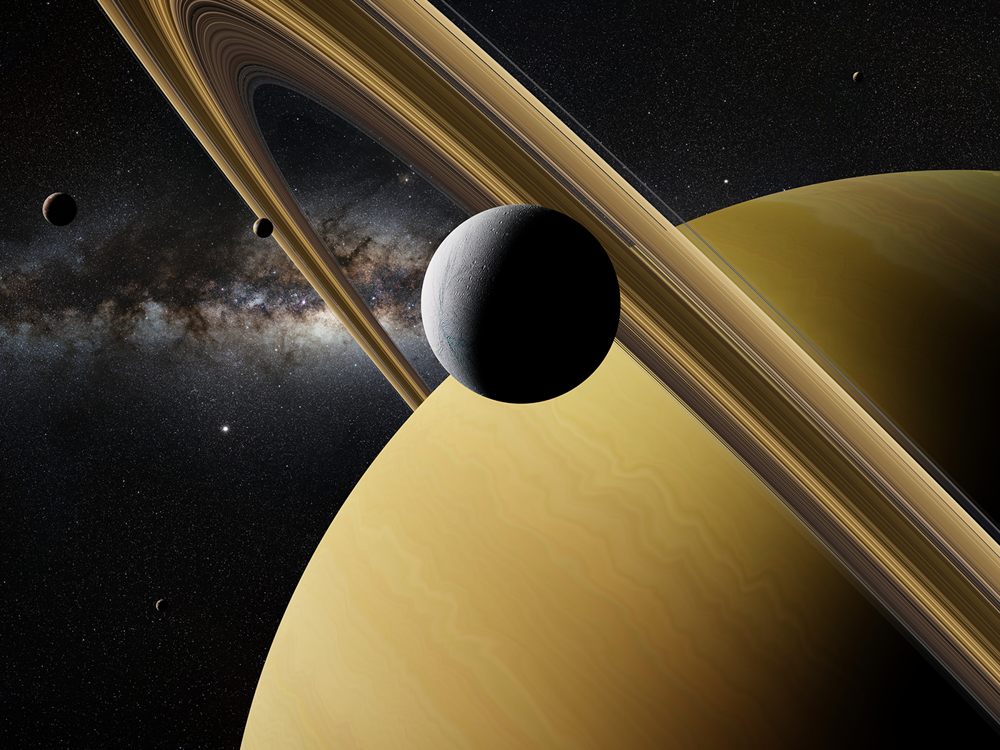

Saturn has many moons, these were the first observed.
Christiaan Huygens discovered the first known moon of Saturn. The year was 1655 and the moon is Titan. Jean-Dominique Cassini made the next four discoveries: Iapetus (1671), Rhea (1672), Dione (1684), and Tethys (1684). Mimas and Enceladus were both discovered by William Herschel in 1789.
Nasa
Here is a link to check out Saturn in real time and observe the location of the moons of Saturn.
Take a trip
Hold your breath or breath deeply in space. The air is filtered, but the views are one of a kind. Book your trip now.